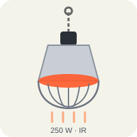

Infrared radiant heaterInfrarot-Wärmestrahler
SW-R250
34 €net list priceNetto-Listenpreis
Bright radiant heater with hard-glass infrared lamp. Heats the area directly below within seconds. Supplied with guard, chain and second safety catch.
Hellstrahler mit Hartglas-Infrarotlampe. Erwärmt die Fläche direkt darunter in Sekunden. Mit Schutzkorb, Kette und zweiter Fangsicherung im Lieferumfang.
- Type of heat
- Art der Wärme
- radiation (visible red light)
- Strahlung (sichtbares Rotlicht)
- Power / supply
- Leistung / Anschluss
- 250 W · 1~/N/PE AC 230 V · plug, 2.5 m rubber cableStecker, 2,5 m Gummileitung
- Protection
- Schutzart
- IP44
- Guard
- Schutzkorb
- yes, fixed
- ja, fest montiert
- Suspension
- Aufhängung
- chain 2 m + second safety catch
- Kette 2 m + zweite Fangsicherung
- Minimum distance
- Mindestabstand
- 60 cm to litter and animals
- 60 cm zu Einstreu und Tieren
- Setting
- Schaltstufen
- 50 % / 100 %
- Animals per unit
- Tiere je Gerät
- approx. 75 chicks
- ca. 75 Küken
Installation notesMontagehinweise
Hang on the chain only – never on string, never by the cable. Fit the second safety catch to a separate fixing point. Keep the minimum distance even when the litter builds up.
Nur an der Kette aufhängen – nie an Schnur, nie an der Leitung. Die zweite Fangsicherung an einem eigenen Befestigungspunkt anbringen. Mindestabstand auch dann einhalten, wenn die Einstreu wächst.